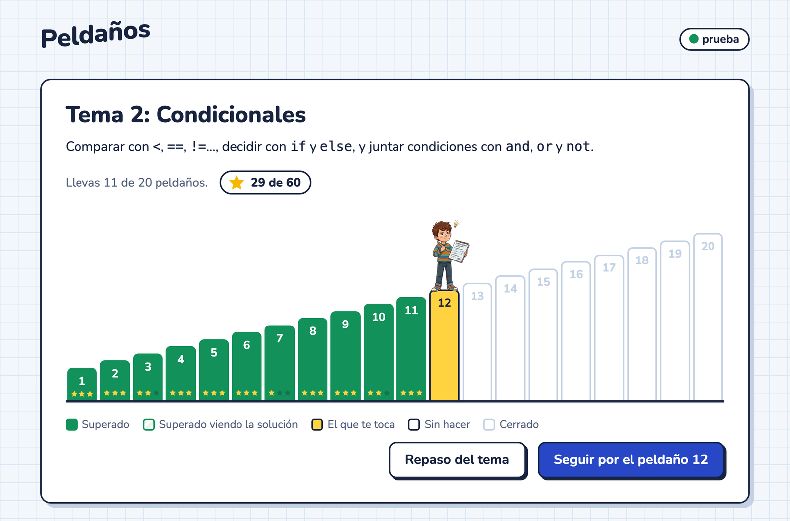
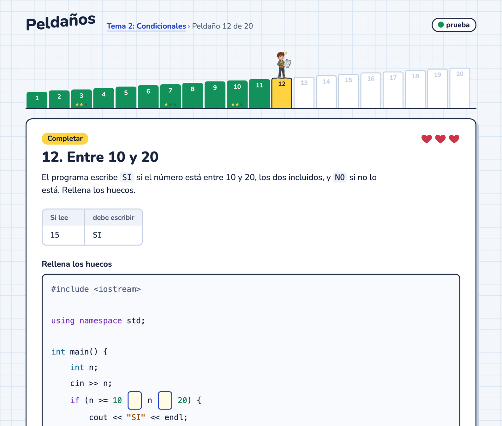

Peldaños
Aprender a programar, peldaño a peldaño
Peldaños son ejercicios cortos de C++ que se corrigen solos. Cada ejercicio es un peldaño y cada tema, una escalera: se sube en orden, de lo más fácil a lo más difícil.
Desde esta página se entrará a Peldaños. Todavía no está abierta: la estamos preparando.
Muy prontoCada tema, una escalera
En la escalera se ve lo que llevas subido, el peldaño que te toca y las estrellas que has ganado en cada uno.

Cada ejercicio, un peldaño
- Seis clases de ejercicio, de menos a más: predecir lo que escribe un programa, arreglarlo, completarlo, ordenar sus líneas, modificarlo y escribirlo entero.
- Se corrigen con el compilador de verdad: cualquier programa que funcione vale, no solo el que coincide con la solución.
- Tres corazones por peldaño: los que te quedan al acertar son las estrellas que ganas. Y un peldaño se puede repetir para mejorarlas.
